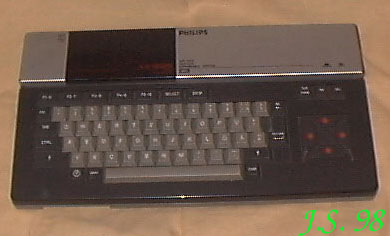
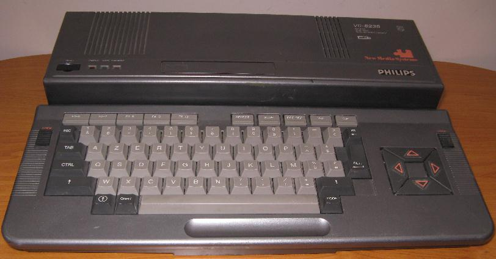

PHILIPSFirma Philips produkowa³a ca³y szereg komputerów zgodnych ze standardem MSX. Jednym z nich jest...VG-8020 Procesor Z80RAM 64kB.ROM 32kB.Procesor graficzny TMS9129.Rozdzielczo¶æ maksymalna 256 X 192Grafika 16 kolorów.Tekst 25 linii po 40 znaków.Porty: magnetofon, drukarka, 2 gniazda kartrid¿a, 2 gniazda d¿ojstika.Zewnêtrzne peryferia: magnetofon, drukarka.D¼wiêk: Yamaha S-3527, tylko w wersji 00 Yamaha YM2149.VG-8235 Procesor Z80/3.58MHz.RAM 128kB.VRAM 128kB.ROM 64kB.Procesor graficzny V9938.Rozdzielczo¶æ maksymalna 512 X 212Grafika 7 trybów, max 256 kolorów z palety 512.Tekst 24 linie po 40 lub 80 znaków.Porty: wbudowana jednostronna stacja dysków 3.5", 2 gniazda kartrid¿a, 2 gniazda d¿ojstika, port drukarki i magnetofonu.Zewnêtrzne peryferia: zewnêtrzny napêd dyskowy, magnetofon, drukarka.D¼wiêk: Yamaha S-3527. |